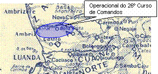

O 26º.Curso de Comandos
HISTÓRIA RESUMIDA DA 2042ª COMPANHIA DE COMANDOS
NOTA INTRODUTÓRIA
Muitos anos já passaram desde a formação da nossa companhia. Nela vivemos irmanados durante cerca de dois anos, numa comunhão quase total de sentimentos e experiências.
Sofremos juntos a dureza extrema de um curso de comandos, para de seguida também juntos, enfrentarmos uma guerra traiçoeira de minas e emboscadas.
Forjámos a nossa amizade na alegria natural da juventude, mas também e essencialmente no sofrimento e na provação. Chorámos juntos os nossos camaradas mortos.
Hoje, trinta anos depois, cada um tem a sua família e exerce a sua profissão, bem ou mal remunerada, com mais ou menos sucesso. A vida que sorriu a alguns tem sido madrasta para outros.
Muitas vezes nos temos reunido em confraternizações anuais onde nos revemos, revivendo os bons e os maus momentos de outrora.
Que sentimento é este que nos junta uma vez por ano e que nos mantém unidos como se ainda vivêssemos na Companhia? Não sabemos, mas sentimo-lo. Foi com ele, com esse sentimento que não sabemos explicar, que nos mobilizámos para escrever esta História Resumida. Nela se pretendeu dilatar a nossa memória colectiva para além do efémero das nossas vidas. Os nossos filhos, netos e demais vindouros, poderão assim em qualquer altura, fazer uma pequena ideia do que foi a vivência dos seus antepassados, nesta aventura que foi a 2042ª Companhia de Comandos.
Este resumo sabe a pouco. Somos capazes de fazer mais e melhor. Basta sentirmos receptividade e colaboração de todos para desenrolar as histórias da nossa história, que se encontram meio esquecidas, na penumbra da nossa memória. MAMA SUMAE.
O COMEÇO
A 2042ª Companhia de Comandos começou a ser constituída nos finais de mil novecentos e setenta e dois, na lógica de formação de companhias de tropas especiais, necessárias segundo critérios político-militares, ao combate contra os designados oficialmente por movimentos de libertação das colónias portuguesas.
O CIOE - Centro de Instrução de Operações Especiais no Continente e o CIC - Centro de Instrução de Comandos em Angola, foram as unidades mobilizadoras responsáveis pelo recrutamento dos militares que viriam, depois da selecção imposta por um curso de comandos, a constituir esta companhia.
A escolha dos elementos que constituíram o sector operacional propriamente dito, bem como a dos que serviram a companhia na área dos serviços, teve lugar nas várias unidades espalhadas pelo país (Continente e Angola). Os recrutados do continente, onde se incluíam seleccionados, convidados e voluntários, apresentaram-se no dia quatro de Janeiro de mil novecentos e setenta e três, no Regimento de Artilharia Fixa de Porto Brandão. No dia seguinte, depois de cumprir algumas formalidades burocráticas, foi concedida licença que terminou a catorze do mesmo mês, dia marcado para apresentação na referida unidade, para de seguida embarcar para Angola via TAM – Transportes Aéreos Militares.
Em Dezembro de mil novecentos e setenta e dois foram seleccionados em Angola, instruendos do CSM da EAMA - Escola de Aplicação Militar de Angola e recrutas dos diversos Regimentos de Infantaria existentes naquele Estado para virem a frequentar o curso de comandos que daria origem à 2042ª C.C. Esta selecção foi feita por militares do CIC.
Deveríamos ser cerca de quinhentos homens, entre oficiais, sargentos e praças, concentrados em Porto Brandão. Deste número, a que se juntariam em Angola oitenta a cem elementos, sargentos e praças, só cerca de cinquenta por cento chegaríam ao fim do curso com aproveitamento. Deste número final viriam a ser formadas duas companhias de comandos: de combate cada uma: A 2042ª C.C. com seis grupos que serviu em Angola e da qual vamos conhecer sucintamente a história e a 2043ª C.C. com quatro grupos de combate que seguiu para Moçambique onde fez o seu percurso também cheio de peripécias, que não cabe aqui relatar.
Comandariam a 2042ª C.C. e a 2043ª C.C. respectivamente o então tenente Cunha Lopes e o capitão Ventosa, os quais iriam frequentar o curso de comandos juntamente com todos nós, seus futuros comandados.
A viagem para Angola teve lugar nas noites de quinze, dezassete e vinte e três de Janeiro de mil novecentos e setenta e três, com chegadas a Luanda nas manhãs dos dias seguintes.
Quando desembarcámos, tínhamos à nossa espera graduados do CIC que nos conduziram, de imediato, para uma área de tropas em trânsito, no Campo Militar do Grafanil.
Aqui permanecemos até ao dia vinte e cinco de Janeiro, data em que nos conduziram, em coluna militar, para as instalações do CIC.
26º CURSO DE COMANDOS
PROVA DE CHOQUE OU PROVA DA SEDE
Depois de nos impressionarem com todo o aparato com que nos receberam, nomeadamente com todas as atitudes a evidenciar a disciplina e a mística da tropa comando, tivemos a primeira formatura geral onde ficámos a conhecer o comandante do CIC, coronel Correia Diniz, bem como todos os elementos do corpo de instrução que, mais de perto, iriam trabalhar connosco.
Conduziram-nos de seguida até junto das casernas onde iríamos ficar alojados, junto das quais nos distribuíram uma espingarda G3 e duas cartucheiras, bem como todo o material que iríamos utilizar no curso.
A primeira coisa que se aprende num curso de comandos é a encher, que é a mesma coisa que pagar. Encher ou pagar consiste em cumprir um castigo físico que o instrutor ou qualquer superior nos aplica por não fazermos qualquer obrigação, ou não a fazermos com a rapidez ou perfeição que nos é exigida. Pode também ser por realizarmos qualquer tarefa com demasiada perfeição ou excessiva rapidez, quando o instrutor ou superior está a contar que o nosso desempenho não seja tão eficaz.
Havia diversos modos de encher, tais como: Flexões de pernas e de braços, cangurus, mata-borrões, cambalhotas, rastejar, etc. Flexões de pernas e de braços toda a gente sabe o que é. Fazer cangurus consiste em afastar as pernas, uma à frente e outra atrás, cruzar as mãos atrás da nuca e saltar trocando a posição das pernas. Fazer um mata-borrão é posicionar-se de joelhos no solo com as mãos cruzadas atrás das costas ao nível da cintura, esticando a cabeça ao máximo para trás, com a cara de lado para proteger o nariz, e depois deixar-se cair para a frente com o corpo todo curvado para trás para amortecer melhor a queda. Cambalhotar e rastejar é isso mesmo, é só fazer, todos sabem no que consiste.
Pagar ou encher vinte completas implicava fazer vinte flexões de braços, vinte de pernas, vinte cangurus, etc.
Outra coisa que se aprende logo no primeiro dia é que a Parada é um espaço onde não se anda. Ou se marcha com todo o rigor ou se atravessa em passo de corrida. Parados, só em formatura.
Ficámos também a saber que dentro ou fora do CIC, temos sempre a acompanhar-nos uma aparelhagem sonora, onde nunca falta a canção “donne moi ma chance”do Richard Anttoni, que iremos ouvir muitas centenas de vezes até ao fim do curso.
A companhia de instrução era composta por dezassete grupos com cerca de trinta instruendos cada um, sendo um grupo de oficiais, três de sargentos e treze de praças.
No final do primeiro dia, e já depois de ter tocado a silêncio, fomos avisados através da instalação sonora existente nas casernas, para formarmos em uniforme de combate. Depois de formar e de encher por conta dos atrasos e pela má interpretação do que era o uniforme de combate, fomos mandados para as casernas. Esta manobra repetiu-se por três vezes até que por fim nos meteram em viaturas e abandonámos as instalações do CIC numa longa coluna militar. Tinha começado a Prova de Choque ou Prova da Sede, como era mais conhecida entre os instruendos.
Rodámos toda a noite, passando por Cacuaco, Caxito, e a partir do controlo militar de Sassa, como já era zona de possível contacto com o inimigo, obrigaram-nos a fazer diversas paragens, mais ou menos prolongadas, essencialmente com o intuito de nos prepararem psicologicamente para os três dias de prova que nos esperavam.
Alvorecia quando chegámos ao local escolhido para esta prova, numa zona a cerca de vinte quilómetros do Úcua, e logo depois de nos ser destinado o local onde cada grupo iria montar o respectivo bivaque clandestino, tivemos formatura da Bandeira.
De seguida fomos brindados com uma sessão colectiva de Ginástica Educativa que culminou com uma correria louca em volta do perímetro exterior do acampamento, e que só terminou quando grande parte dos instruendos tinha caído, por cansaço ou por desmaio. Quem sucumbia era transportado para uma enfermaria de campanha, onde o pessoal médico e de enfermagem dava alguma assistência. Esta assistência consistia essencialmente em espremer para a boca dos instruendos algodão em rama embebido em água, já que o mal de que todos sofríamos era a sede. Uma sede desmedida que era provocada não só pelo calor intenso e pelo esforço físico que nos era exigido, mas principalmente pelo racionamento de água que nos era imposto – um cantil por dia. Após algum repouso na enfermaria, o instruendo era enviado novamente para o seu grupo, onde continuava a ser obrigado a um extremo esforço físico.
E assim foi durante três infindáveis dias, um mínimo de água, muito esforço físico e uma pressão psicológica constante que provocaram em todos nós um grande choque, a partir do qual o curso nos começaria a ser ministrado.
Logo nesta fase houve muita gente que não aguentou e fugiu, tendo sido eliminados do curso. Ao fim destes três dias loucos regressámos ao CIC a Luanda.
Todos os dias, às oito horas da manhã, estivéssemos no CIC ou noutro local qualquer, havia sempre a chamada formatura da Bandeira. Esta formatura era a mais importante de todas. Nela se reunia toda a companhia e corpo de instrução perante o Comandante e segundo Comandante do CIC. Este verdadeiro ritual do içar da Bandeira comportava um outro ritual que era a leitura do código comando.
A seguir a esta formatura, começava normalmente toda a actividade de instrução que era conduzida sempre nos limites do esforço físico com revistas constantes aos cantis de água que sempre transportávamos no cinturão. Se o cantil não estivesse completamente cheio, havia que pagar.
Além das instalações do CIC em Luanda, tínhamos também instrução na Funda, em Viana e na Carreira de Tiro da Corimba. De todos estes locais o que mais vezes frequentávamos era a Funda. Esta zona de instrução ficava a cerca de quarenta quilómetros de Luanda, em plena mata e tinha uma particularidade que nos infringia grande sofrimento que era a existência de milhões de mosquitos. Estes mosquitos conseguiam picar-nos mesmo por fora do camuflado, deixando-nos o corpo em mísero estado.
A Carreira de Tiro era outro local onde a vida também era dificílima. Éramos propositadamente postos em stresse extremo antes de cada sessão de tiro para assim nos prepararmos para as situações reais de guerra. Ninguém podia reagir a uma emboscada calmamente, era necessário aprender a disparar em stresse e com o mínimo de pontaria.
PROVA DE FOGO
A vinte de Fevereiro a companhia de instrução realizou a segunda grande saída para fora de Luanda. Estas deslocações tinham sempre o propósito de que a instrução nos fosse ministrada em cenários o mais parecidos possível com a realidade da guerra.
Esta saída, como todas as de maior importância, foi antecedida de grandes manobras de diversão. Desta vez o nosso destino foi uma zona chamada Mombaça, perto do Dondo e a cerca de trinta quilómetros desta cidade. A estadia aqui prolongou-se por duas semanas duríssimas em termos de instrução, culminando com a chamada Prova de Fogo. Aqui fizemos também duas provas de orientação, só destinadas a oficiais e sargentos, onde foram testados os ensinamentos até à data aprendidos na disciplina de Orientação e Navegação Terrestre.
Ao fim da primeira semana, proporcionaram-nos uma ida até perto do Dondo onde pudemos tomar um banho nas barrentas águas do Quanza.
Já perto do fim desta saída fizemos a Prova de Fogo, que era sem dúvida, a prova rainha do curso de comandos. Aqui o instruendo era posto à prova e avaliado individualmente num percurso de cerca de cinco quilómetros, em que tinha que vencer variadíssimos obstáculos, aplicando não só a sua destreza natural, mas também todos os ensinamentos que até à data lhe tinham sido ministrados.
Iniciada a prova, o instruendo corre, salta no vazio, rasteja sob arame farpado enquanto é fustigado com rebentamento de petardos, corre novamente enquanto é alvejado a poucos metros dos pés com tiros de G3, e faz demonstração de uma aproximação, em técnica de combate, a um acampamento. Mergulha numa vala cheia de toda a espécie de detritos e por fim é presenteado com um “palito” que pesa cerca de quinze quilos, com a incumbência de o transportar durante cerca de mil metros. A sua acção é sempre dificultada por elementos do corpo de instrução, sempre prontos a aboná-lo com sopapos e outros mimos. Finalmente o instruendo apresenta-se a um capitão que o descompõe por não se encontrar impecavelmente fardado. No fim da prova, extenuado, são-lhe distribuídos dez litros de água para tomar banho que ele utiliza essencialmente para beber e lavar a maior parte da porcaria que se lhe entranhou na roupa e no corpo enquanto atravessou aquela maldita vala.
Ao fim dos quinze dias regressámos ao CIC a Luanda e tivemos direito a um fim-de- semana de dois dias. Os nossos fins-de-semana raramente coincidiam com o Sábado e Domingo e normalmente só compreendiam um dia ou dia e meio, não tendo nunca qualquer lógica de periodicidade.
Nos dias seguintes, à semelhança do que tinha acontecido no final da Prova da Sede, também foram eliminados do curso muitos instruendos.
Estávamos agora com mais de dois meses de curso, e entre os que permanecíamos na companhia de instrução respirava-se pujança física por todos os poros. Um crosse de dez ou doze quilómetros no fim de um dia de instrução, era canja para quase todos nós.
Retomaram-se as saídas para a Funda, Viana e Carreira de tiro da Corimba. Agora também começámos a ir para o Morro dos Veados, a caminho da Barra do Quanza, onde nos são dadas aulas de Técnica de Combate e Observação.
As aulas de Técnica de Combate ganham cada vez mais importância, porque agora há que aperfeiçoar não só o procedimento individual, como também o procedimento e a manobra da equipa. É nesta fase que mais treinamos a reacção em equipa a hipotéticas emboscadas inimigas. No treino é introduzido um elemento novo para nós, que consiste em reagir a hipotéticas emboscadas não só com fogo de G3, mas também insultando o inimigo e a mãe dele, com todos os palavrões que sabemos.
A SEMANA MALUCA
Em vinte e dois de Março tivemos nova grande saída. Desta vez o destino foi uma zona que se localiza entre o Caxito e o Úcua, a sete quilómetros desta localidade, virando à esquerda por uma picada que vai dar ao destacamento de tropa de quadrícula da Mussenga.
A instrução neste local foi bastante penosa porque apanhámos muitos dias de chuva intensa, e com as precárias condições que o bivaque oferecia, era raro dormirmos uma noite enxutos.
Realizámos aqui mais uma prova de orientação que obrigou à passagem de uma noite na mata.
Os dias foram passando com a instrução sempre em bom ritmo, até que um dia ao fim da tarde, quando já havia mais de uma hora que esperávamos pelo jantar, ouvimos pela instalação sonora um toque que, apesar de vir com mais de uma hora de atraso, ninguém pôs em duvida que fosse para jantar. Era realmente toque de refeição, mas o que nos foi servido foi um normalíssimo pequeno-almoço. Toda a gente se apercebeu que tinha começado a tão badalada semana maluca.
A semana maluca consistia muito simplesmente em trocar a noite pelo dia. Assim, a alvorada passava a ser às dezanove horas, o pequeno-almoço às dezanove e trinta, a formatura da Bandeira às vinte horas, almoço às vinte e quatro e jantar às seis horas da manhã. O toque de silêncio soava às dez da manhã. Claro que quando havia instrução nocturna, esta processava-se a partir das oito da manhã e às vezes prolongava-se até por volta do meio-dia. Dormir era de dia.
Depois desta semana verdadeiramente maluca, regressámos novamente ao CIC a Luanda.
A partir desta altura o uniforme de combate passa a contar com mais um adereço– uma mochila com duas rações de combate.
Retomámos novamente as saídas para a Funda, Viana e Corimba, enquanto caminhávamos a passos largos para o fim do curso.
PROVA DE ÁGUA
No dia vinte de Abril, ao fim de um dia normal de instrução, a companhia formou e embarcou nas berliets, seguimos em coluna auto pela estrada de Catete. Quando chegámos ao início do Campo Militar do Grafanil, a coluna deteve-se e apeámo-nos. Depois de nova formatura, iniciámos uma marcha forçada, percorrendo a estrada de terra batida que contornava exteriormente o referido Campo Militar, sempre junto ao arame farpado até chegarmos a Belas, num percurso de cerca de trinta quilómetros. Aí chegados, por volta das dez horas da noite, subimos novamente para as viaturas para fazer um curto percurso até perto do Morro dos Veados onde nos foi servida uma refeição à base de sandes, bananas e compotas, tudo em abundância. Por volta da meia-noite entrámos no mar, com água até ao pescoço. Assim caminhámos, só com a cabeça de fora, até chegar ao Morro dos Veados, uma elevação de mais de cem metros de altitude e de vegetação arbustiva densa, que interrompe a linha de praia. Subimos e descemos esse morro, experimentando pela primeira vez, a sensação do desconforto de sair da água e ficar exposto à brisa nocturna. Vencido o Morro dos Veados, retomámos novamente a caminhada aquática sentindo mesmo algum conforto, já que a temperatura dentro de água era superior à temperatura da brisa nocturna. A fadiga começava a apoderar-se dos nossos corpos, condicionando largamente todos os movimentos. Parecia impossível mas com tanto cansaço, havia momentos em que mesmo com água quase pelo pescoço, o corpo adormecia por curtos períodos, embora continuasse a andar. É uma das sensações mais estranhas que se podem experimentar. Assim continuámos, sempre caminhando na água do mar até chegarmos à praia da Corimba às cinco e trinta da manhã. Aqui chegados, o desconforto ainda se agravou mais uma vez que se fazia sentir um vento fresco, que ao contacto com o nosso corpo completamente encharcado, nos pôs a tiritar. Como se tudo aquilo por que passámos não bastasse, mandaram-nos rebolar na areia para ficarmos parecidos com croquetes. A tudo isto somou-se o desconforto da viagem de regresso ao CIC, feita em berliet descoberta, batendo o dente por acção daquele vento fresco a incidir no corpo completamente encharcado, salgado e com toda aquela areia a picar.
Ao chegar, depois de um duche rápido e de mudar de roupa, iniciou-se um dia normal de instrução.
A partir desta altura toda a gente começou a sentir que o curso estava praticamente terminado, notando-se uma grande saturação tanto nos instruendos como nos próprios instrutores.
Por estranho que hoje nos pareça, a partir desta fase quase toda a gente queria trocar a “prisão” do curso pela “liberdade” da vida operacional na mata, onde sonhávamos obter os maiores êxitos sobre o inimigo e confiscar-lhe o maior número possível das suas armas, que além de o enfraquecer operacionalmente, constituiriam os nossos troféus. Este sonho, tão difícil de entender hoje, só poderia ser fruto da intencionalidade com que o curso nos foi ministrado. Contudo, a realidade viria a revelar-se bem diferente, e o sonho por várias vezes se tornou pesadelo.
A PROVA OPERACIONAL
A última prova de um curso de comandos, a Operacional, realizava-se depois de cumpridos cerca de noventa dias de instrução, em zonas de actividade inimiga e constituía a prova onde todas as aptidões adquiridas, nas diferentes áreas de preparação, eram testadas.
Nesta fase de um curso de comandos, os grupos de instrução apresentavam já a estrutura de um grupo de combate, constituídos por cinco equipas de cinco homens, e supostamente preparados para realizar uma prova com as características da Operacional.
A operacional do 26º curso de comandos teve lugar na zona norte de Angola e foi designada por Açucena/Norte.
A acompanhar os grupos de instrução, constituídos por um oficial, quatro sargentos e vinte praças, num total de vinte e cinco homens, seguiam dois ou três instrutores com experiência operacional, designados para acções de supervisão, correcção e aconselhamento das iniciativas tomadas quer no cumprimento dos objectivos traçados quer na resolução de problemas ligados a acontecimentos próprios de uma acção de contra guerrilha. Os grupos foram largados por meios auto na margem norte do rio Loge, próximo da cidade do Ambriz, desenvolvendo a sua actividade operacional ao longo desta margem e recuperados na tarde do terceiro dia para o aquartelamento da Bela Vista. Foram destruídos acampamentos, capturada uma arma e eliminados dez inimigos.

A companhia de instrução regressou ao CIC a Luanda, em meios auto, no dia dez de Maio de mil novecentos e setenta e três.
Depois de um curto fim-de-semana, tiveram lugar as cerimónias de Imposição dos “Crachás” e entrega do Guião da Companhia, no dia dezassete de Maio de mil novecentos e setenta e três.
dia em que terminou o 26º curso de comandos. Os novos militares comandos saídos deste curso, formaram duas companhias; a 2042ª C.C. para actuar na RMA ( Região Militar de Angola ) e a 2043ª C.C. que seguiu para a RMM ( Região Militar de Moçambique ).